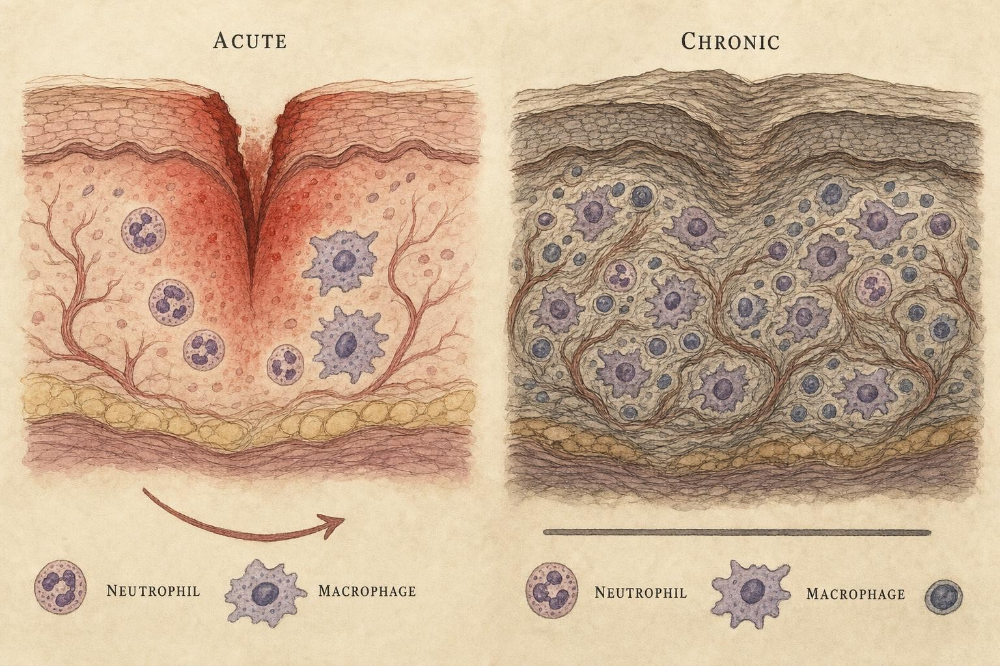
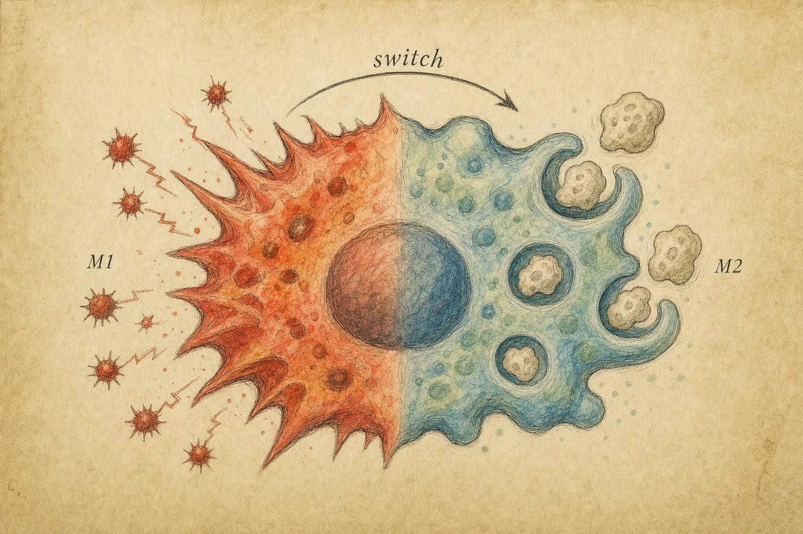

Putting Out the Fire , and Why It Sometimes Won't Go Out
Resolution is not the absence of inflammation. It is a program , one that can fail.
Cut your finger and watch what happens over the next week. Within minutes the wound reddens, swells, and throbs , the four classic signs the Roman physician Celsus catalogued two thousand years ago: rubor, tumor, calor, dolor. For a day or two the site is a war zone: neutrophils pour in, bacteria are killed, damaged cells are stripped away. And then, quietly, something remarkable happens. The redness fades, the swelling recedes, the pain stops, and new tissue knits the gap closed. Within a week you may have forgotten the injury entirely.
For most of the twentieth century, immunologists took that fading for granted. Inflammation ended, the textbooks implied, simply because the thing that started it went away , the bacteria were dead, the stimulus was gone, so the response petered out like a fire running out of fuel. This was passive resolution, and it was almost entirely wrong. The end of inflammation, we now know, is not a fade-out. It is a deliberate, biochemically orchestrated program , as actively switched on as the inflammation that preceded it. And when that program misfires, the fire does not go out. It smolders. That smoldering is the thread connecting nearly every chronic disease we will study for the rest of this course.
Now multiply that finger cut by decades, and swap the visible wound for an invisible one: a fat cell straining under a long-term caloric surplus, an artery wall slowly accumulating oxidized cholesterol, a joint lining exposed to an immune cell that has mistaken the body's own tissue for a threat. In every one of these cases, the opening moves of inflammation look remarkably similar to what happened at your fingertip. What differs, and what this chapter exists to explain, is whether the closing moves ever happen. That single variable, whether the resolution program succeeds or fails, is what separates a scraped knuckle that is forgotten within a week from a disease process that quietly reshapes a person's arteries, pancreas, joints, or brain over twenty or thirty years. Learning how resolution works is therefore not a footnote to the study of inflammation. It may be the single most clinically consequential idea in the entire subject, because it points to the one part of the process we might eventually learn to support on purpose, rather than simply trying to suppress the whole response after the fact.
Two kinds of fire
Before we can talk about resolution, we need a clean distinction between the two faces of inflammation, because they behave so differently that confusing them has derailed both research and therapy.
Acute inflammation is the response you just watched at your finger. It is fast , onset in minutes to hours. It is dominated early by neutrophils (the short-lived, first-responder white blood cells) and later by macrophages (larger, longer-lived cells that both attack and clean up). Critically, it is self-limiting: built into its design is a stopping mechanism. Acute inflammation is protective. It contains infection, clears dead tissue, and sets the stage for repair. A body that could not mount acute inflammation would die of the first serious wound or infection , a fact worth holding onto, because it explains why we cannot simply suppress inflammation wholesale and call it a cure.
Chronic inflammation is a different animal. It persists , for weeks, months, years, sometimes a lifetime. Its cellular cast shifts from neutrophils toward macrophages, lymphocytes, and plasma cells. Instead of the tidy sequence of attack-then-repair, chronic inflammation runs attack and repair simultaneously and endlessly, so that tissue destruction and attempted healing occur in the same place at the same time. The result is not restoration but scarring, remodeling, and progressive dysfunction. Where acute inflammation is a controlled burn that clears the underbrush, chronic inflammation is a fire that never stops consuming the forest.
Here is the reframing that organizes this entire chapter. For a long time we assumed chronic inflammation was simply too much acute inflammation , an over-active response that needed damping. The modern view, articulated forcefully by Fullerton and Gilroy (2016), is that many chronic inflammatory disorders reflect not excess activation but a failure of resolution. The fire is not necessarily larger. The problem is that the fire brigade never arrives, or arrives and cannot finish the job. This distinction is not academic hair-splitting; it points to completely different therapeutic strategies, as we will see.
The choreography of an acute response
To see why resolution is a distinct, separately programmable step, it helps to walk through what happens between the cut and the scab in more mechanistic detail, because the classic four-stage sequence of vascular change, cellular recruitment, phagocytosis, and repair is really a chain of individually controllable switches, any one of which can be turned toward resolution or left stuck in the "on" position.
The opening move is vascular. Chemical alarm signals released by injured cells and by resident immune sentinels called mast cells (tissue-dwelling cells packed with pre-formed granules of histamine) cause nearby small blood vessels to dilate, which is why the site turns red and warm, and to become leakier, which is why it swells. That leakiness lets plasma, including antibodies and a cascade of blood proteins called the complement system, flood into the tissue and begin tagging invaders for destruction, a process called opsonization (coating a particle so that immune cells recognize it as something to be eaten).
The second move is cellular, and it is a small miracle of logistics. Neutrophils circulating in the bloodstream must be pulled out of fast-moving blood and delivered precisely to the injury site. This happens in a stepwise sequence immunologists call the leukocyte adhesion cascade. First, adhesion molecules called selectins appear on the inner surface of the vessel wall and catch passing neutrophils, causing them to slow down and roll along the vessel lining rather than flowing past at full speed. Second, chemical attractants called chemokines, displayed on the vessel surface, activate stronger adhesion molecules on the neutrophil called integrins, which grip the vessel wall tightly enough to stop the cell completely. Third, the arrested neutrophil squeezes between the cells of the vessel wall and out into the tissue, a maneuver called diapedesis. Once outside the vessel, the neutrophil follows a rising concentration gradient of chemical attractants, a directional homing behavior called chemotaxis, straight to the site of damage or infection.
Arriving neutrophils then do the dirty work: they engulf opsonized bacteria and debris whole, a process called phagocytosis (literally, "cell eating"), and destroy what they have swallowed with a burst of toxic, reactive oxygen molecules known as the respiratory burst, alongside a payload of digestive enzymes released from internal storage granules, called degranulation. This is effective and, by design, destructive; the same reactive molecules that kill bacteria also damage surrounding host tissue, which is part of why an inflamed area hurts and why prolonged neutrophil activity is never free of cost. Neutrophils are also short-lived on purpose. After carrying out their mission, most undergo a form of programmed, tidy cell death called apoptosis within roughly a day or two, a built-in expiration date that, as we will see, is the first domino in the resolution sequence rather than an afterthought.
What keeps a fire burning past its natural end
Classic pathology textbooks list a handful of situations that reliably produce chronic inflammation, and they are worth knowing because they represent genuinely different failure modes, not one single mechanism. A persistent infection by an organism the immune system cannot fully clear, the bacterium that causes tuberculosis is the textbook example, keeps the trigger alive indefinitely, so inflammation never runs out of fuel in the first place. Prolonged exposure to a non-degradable irritant, such as inhaled silica dust or a foreign object the body cannot break down or expel, has the same effect: the alarm keeps ringing because the thing setting it off never leaves. In autoimmune disease, the immune system mistakenly targets a normal component of the body's own tissue, which by definition never disappears, so the response is aimed at a target that will always be present tomorrow.
Those three categories share an obvious feature: the trigger itself persists. But they do not exhaust the list, and the omission is exactly what makes this chapter necessary. As you will see over the following sections, a perfectly ordinary, transient trigger, the kind that would resolve cleanly in a healthy person, can also produce chronic inflammation if the resolution program itself is deficient, even after the original trigger is long gone. This fourth category, failure of the intrinsic stop signal rather than persistence of the start signal, was barely discussed in immunology textbooks before the early 2000s. It is now understood to be central to the chronic diseases that dominate modern medicine, which is why the rest of this chapter is devoted to it.

The same trigger; two destinies. The difference lies less in ignition than in whether resolution fires." data-image-idx="0" style="display:block;max-width:100%;max-height:75vh;height:auto;width:auto;margin:0 auto;cursor:pointer;">The dogma that had to fall
To appreciate how radical the modern view is, you have to feel the weight of the old one. Recall from Chapter 3 the pro-inflammatory mediators , the eicosanoids like prostaglandins and leukotrienes, lipid signaling molecules manufactured on demand from arachidonic acid, that amplify pain, recruit neutrophils, and drive vasodilation. The classical model held that these mediators simply decay. Enzymes degrade them; the tissue concentration falls; the signals for recruitment weaken; the response winds down on its own. Resolution, in this picture, is what happens when nothing is happening , a vacuum left by departing signals.
It helps to see the biochemistry behind that old picture, because the same machinery turns out to contain the seeds of its own reversal. Eicosanoids are not stored ready-made; they are built on demand from arachidonic acid, a twenty-carbon fatty acid held in reserve inside the phospholipid molecules that make up cell membranes. When a cell is activated, an enzyme called phospholipase A2 clips arachidonic acid free from the membrane, making it available as raw material. From that single starting molecule, two rival enzymatic routes compete for the supply. The cyclooxygenase pathway, using the COX-1 and COX-2 enzymes that are the target of aspirin and ibuprofen, converts arachidonic acid into prostaglandins and thromboxanes. The lipoxygenase pathway, using an enzyme called 5-lipoxygenase, converts it instead into leukotrienes. Both routes, in the classical model, were understood purely as inflammation-amplifying assembly lines.
What Serhan and Savill's evidence forced immunologists to recognize is that this same raw material and much of this same enzymatic machinery can be redirected, mid-response, to build the opposite kind of molecule. As a lesion matures, a different lipoxygenase enzyme, 15-lipoxygenase, becomes active in the tissue, often in cells like epithelial cells or in neutrophils themselves. When a 5-lipoxygenase-generated intermediate is handed off to a cell expressing 15-lipoxygenase, in a cooperative, multi-cell manufacturing process called transcellular biosynthesis, the product is no longer a leukotriene. It is a lipoxin, the first of the pro-resolving lipid mediators we will meet properly in the next section. The same starting material, arachidonic acid, and much of the same enzymatic toolkit, lipoxygenases, can therefore build either an accelerant or an extinguisher, depending on which enzyme gets the substrate and when.
The problem is that careful measurement did not fit. When Charles Serhan and John Savill assembled the evidence in their landmark 2005 review, Resolution of inflammation: the beginning programs the end, they described something the passive model could not explain: within the very first hours of an inflammatory episode, the tissue undergoes a lipid mediator class switch. The same cells producing pro-inflammatory prostaglandins and leukotrienes begin, mid-response, to switch their enzymatic machinery toward manufacturing an entirely different class of lipids , the lipoxins , whose job is not to inflame but to terminate inflammation (Serhan & Savill, 2005).
Read that sequence again, because its logic is the heart of the paradigm shift. The signals that end inflammation are switched on at the very beginning, not the end. The onset of inflammation contains, encoded within it, the instructions for its own conclusion. "The beginning programs the end" is not a slogan; it is a mechanistic claim. Prostaglandin E₂, one of the pro-inflammatory eicosanoids, actively induces the enzymes that produce lipoxins , meaning the peak of inflammation directly triggers the machinery of its own resolution. Resolution is not a vacuum. It is a scheduled event, set in motion by inflammation itself.
Resolution was once viewed as a passive process, arising simply from the withdrawal of pro-inflammatory signals. It is now clear that resolution is an active, highly coordinated and programmed response.
After Serhan & Savill (2005)
This finding demanded new vocabulary. If specialized molecules are actively produced to end inflammation, they deserve a name and a family tree. That family is the subject of the next section , and it is where omega-3 fatty acids, which will reappear insistently in the nutrition chapter, first enter our story.
Before moving on, it is worth resolving the puzzle posed earlier about aspirin, because the answer captures the whole logic of this chapter in miniature. Ordinary cyclooxygenase-2 makes prostaglandins that, as described above, help trigger the lipoxin-producing switch. Aspirin does not simply block cyclooxygenase-2; it permanently modifies the enzyme through a chemical reaction called acetylation, and the acetylated enzyme keeps working, but its output changes: instead of a normal prostaglandin, it now produces a related molecule that 5-lipoxygenase can convert into a variant called an aspirin-triggered lipoxin. These aspirin-triggered lipoxins act on the same receptors as ordinary lipoxins but resist the enzymes that normally break natural lipoxins down within minutes, so their pro-resolving signal lasts considerably longer. This is part of the mechanistic explanation for why low-dose aspirin, used for decades in cardiovascular prevention, behaves differently from high-dose anti-inflammatory aspirin, and it is a clean illustration of how the resolution framework generates specific, testable predictions that the older, purely suppressive model of anti-inflammatory drugs never could.
The specialized pro-resolving mediators
Over the following decade, Serhan and colleagues characterized a whole family of endogenous molecules whose collective function is to drive inflammation to a close and restore tissue to its resting state. They named them specialized pro-resolving mediators, or SPMs (Serhan, 2014). The family has four major branches, and it is worth knowing them by name because they recur throughout the course:
The lipoxins, derived from arachidonic acid, were the first discovered and mark the initial class switch. The resolvins , split into a D-series and an E-series , are synthesized from the omega-3 fatty acids docosahexaenoic acid (DHA) and eicosapentaenoic acid (EPA) respectively. The protectins, also DHA-derived, are named for their organ-protective effects, particularly in neural tissue. And the maresins (macrophage mediators in resolving inflammation) are produced by macrophages and are potent drivers of tissue regeneration. Notice the raw material: three of the four families are built from omega-3 essential fatty acids , nutrients your body cannot synthesize and must obtain from diet (Serhan, 2014). This is the molecular reason a fish-oil-versus-nothing debate is not a fad but a question about the supply chain for resolution itself.
Each SPM family works by binding specific docking sites, called receptors, on the surface of immune cells, and knowing a few of these receptors by name makes the biology concrete rather than abstract. Lipoxin A4 signals mainly through a receptor called ALX/FPR2, found on neutrophils and macrophages, and interestingly this same receptor also recognizes an unrelated anti-inflammatory protein called annexin A1, suggesting the cell has converged on one docking site for several independent "stand down" signals. Resolvin E1 acts on a receptor called ChemR23 to promote macrophage recruitment for cleanup duty, while simultaneously acting as a partial blocker of BLT1, the receptor that leukotriene B4 (a potent pro-inflammatory eicosanoid) uses to recruit fresh neutrophils; one molecule, in other words, can turn a "come here" signal for cleanup crews and a "stop coming" signal for reinforcements at the same time. Resolvin D1 signals through both ALX/FPR2 and a second receptor, GPR32. The existence of dedicated receptors, rather than SPMs simply diluting or displacing pro-inflammatory chemicals, is itself strong evidence that resolution is an active signaling program and not a passive fade, since evolution does not build dedicated locks unless something is meant to turn the key.
Researchers in Serhan's laboratory also needed a way to measure resolution numerically, rather than describing it only in qualitative terms, and the metric they developed is a useful way to make the whole idea concrete. In an experimental model of acute inflammation, the number of neutrophils in the tissue is tracked over time; it rises to a peak, called Tmax, and then falls. The resolution interval, abbreviated Ri, is defined as the time it takes for the neutrophil count to fall from its peak to half that value. A shorter resolution interval means the tissue is clearing inflammatory cells faster, a longer one means resolution is sluggish. Treating an animal with SPMs before or during an inflammatory episode measurably shortens the resolution interval, which is direct, quantitative evidence that these molecules do not merely correlate with resolution, they cause it (Serhan, 2014).
What do SPMs actually do? Basil and Levy (2015) describe their coordinated action as orchestrating catabasis , a beautiful old Greek word (literally "a going down") for the organism's descent from the fever-pitch of inflammation back to homeostasis. Concretely, SPMs act on several fronts at once:
First, they stop further recruitment. SPMs signal to the blood vessels and to circulating neutrophils that no more reinforcements are needed, halting the infiltration of fresh inflammatory cells into the tissue (Serhan & Savill, 2005). Second, they promote clearance. SPMs stimulate macrophages to engulf spent, dying neutrophils , a process called efferocytosis (from the Latin effero, "to carry to the grave"). Neutrophils are programmed to die by apoptosis after their work is done; if their corpses are not cleared promptly, they rupture and spill toxic contents, reigniting inflammation. Efferocytosis is the sanitation service of resolution. Third, SPMs reprogram the macrophages that do the clearing, nudging them from an aggressive stance toward a reparative one , the phenotype switch we will build a whole widget around shortly.
There is a subtlety here that separates SPMs from ordinary anti-inflammatory drugs, and Basil and Levy (2015) drew it out sharply. A conventional immunosuppressant shuts inflammation down by blunting the immune response across the board , which is why such drugs raise infection risk. SPMs do something more elegant: they dampen inflammation while simultaneously enhancing host defense and microbial clearance. They speed the killing and removal of pathogens even as they wind down the collateral damage. Basil and Levy proposed the term immunoresolvents to capture this: agents that resolve without suppressing. That distinction , resolution versus suppression , is the single most important conceptual takeaway of this chapter, and it reframes what "treating inflammation" should even mean.
Two of the four SPM families deserve a closer look because they illustrate how tissue-specific this system is. A particular protectin, dubbed neuroprotectin D1 because of where it was first characterized, is produced in the retina and in brain tissue and protects neurons from oxidative-stress-induced apoptosis while also limiting the entry of inflammatory leukocytes into neural tissue, a job description that matters enormously given how poorly the brain tolerates collateral damage from unresolved inflammation, a theme that will return when we discuss neuroinflammation later in this chapter. Maresins, meanwhile, are made largely by macrophages themselves using a macrophage form of 12-lipoxygenase, and beyond their pro-resolving actions they have been shown to actively promote tissue regeneration, including stimulating stem-cell-mediated repair, which is consistent with the idea that resolution is not simply a brake on inflammation but a positive program of rebuilding.
One honest limitation is worth flagging here, because it will matter later when we discuss treatment. Natural SPMs are, like the pro-inflammatory eicosanoids they counterbalance, extremely short-lived; specific enzymes rapidly inactivate them within the tissue, presumably so that the resolution signal itself does not linger indefinitely and suppress the immune system's ability to respond to a fresh threat. That built-in fragility is elegant biology, but it is also an engineering headache for anyone hoping to turn SPMs into a stable, swallowable, or injectable medicine, a problem we will return to near the end of the chapter.
The macrophage changes its mind
If SPMs are the chemical signals of resolution, macrophages are its principal cellular agents , and their behavior during resolution is one of the most striking examples of cellular plasticity in the body. A macrophage is not a fixed cell type with a fixed personality. It reads its chemical environment and reconfigures itself accordingly, a property Murray and Wynn (2011) called macrophage plasticity.
The literature captures the two poles of this plasticity with the shorthand M1 and M2, though real macrophages occupy a continuum rather than two boxes. The M1, or classically activated, phenotype is the aggressor. Activated by signals like interferon-gamma and bacterial products, M1 macrophages secrete the pro-inflammatory cytokines you met in Chapter 3 , TNF-α (tumor necrosis factor alpha), IL-1 (interleukin-1), and IL-6 (interleukin-6) , and produce reactive oxygen and nitrogen species: chemically destructive molecules that kill pathogens but also damage host tissue. This is the macrophage as soldier, and in the early phase of infection it is exactly what you want.
The M2, or alternatively activated, phenotype is the healer. M2 macrophages dial down inflammatory cytokine output, ramp up anti-inflammatory signals such as IL-10 (interleukin-10) and TGF-β (transforming growth factor beta), perform efferocytosis to clear apoptotic cells, and secrete growth factors that stimulate the deposition of new tissue and blood vessels. This is the macrophage as medic and builder.
Murray and Wynn (2011) framed orderly inflammation as a sequence of four stages the macrophage population passes through: recruitment to the tissue, in-situ differentiation and activation (the M1 attack phase), conversion to suppressive phenotypes (the M1→M2 switch), and finally restoration of homeostasis. The pivotal event , the hinge on which healthy resolution turns , is that third stage: the phenotype switch from an aggressive to a reparative mode. And here is the elegant feedback loop that ties everything together: the act of efferocytosis itself reprograms the macrophage. When a macrophage engulfs an apoptotic neutrophil, the ingestion event triggers a shift in the macrophage's gene expression toward the anti-inflammatory, pro-resolving phenotype, prompting it to release IL-10, TGF-β, and pro-resolving lipids including resolvins (Cifuentes et al., 2025). Clearing the dead causes the healing. The cleanup and the reprogramming are the same event.
How a macrophage knows what to eat
Efferocytosis sounds simple, a macrophage eats a dead cell, but the recognition problem underneath it is surprisingly delicate: a macrophage must reliably distinguish a neutrophil that has died on schedule, by orderly apoptosis, from every healthy, living cell around it, without ever mistakenly attacking living tissue. The body solves this with a small set of molecular tags. A dying cell flips a membrane lipid called phosphatidylserine, normally kept hidden on the inner face of the cell membrane, so that it now faces outward, functioning as an eat-me signal visible to any passing macrophage. Bridging proteins, most importantly one called Gas6, physically link that exposed phosphatidylserine to a macrophage surface receptor called MerTK, and this handshake both triggers engulfment and, as described above, pushes the macrophage's internal gene-expression program toward the anti-inflammatory, pro-resolving state. Healthy cells, by contrast, display a protective marker called CD47, a don't-eat-me signal that tells macrophages to leave them alone. Dying cells also actively broadcast their location before they are even fully dead, releasing small diffusible find-me signals that draw macrophages toward the neighborhood, so that cleanup can begin promptly rather than waiting for cell corpses to be stumbled upon by chance.
This recognition system is not a minor technical detail; when it breaks, the consequences are severe. If eat-me signals are not displayed properly, if bridging molecules like Gas6 are scarce, or if MerTK receptors are defective or blocked, apoptotic neutrophils are not cleared in time. They then deteriorate into a messier, uncontrolled form of cell death called secondary necrosis, rupturing and spilling their internal contents, including self-DNA and other components the immune system can mistake for a fresh danger signal, directly reigniting the very inflammation that efferocytosis was supposed to end. Impaired efferocytosis has been implicated in autoimmune conditions where the immune system appears to be reacting to the body's own cellular debris, and, as the next section will describe in more detail, it is also central to how fatty deposits inside artery walls become dangerous rather than merely present.
This is why timing matters so much. If the switch happens on schedule, the tissue transitions cleanly from defense to repair. If it happens too early, the pathogen may not be fully cleared. If it fails to happen at all , if macrophages stay locked in M1 mode , the tissue is subjected to unremitting inflammatory assault, and repair, when it comes, is disordered scarring rather than clean regeneration. Schett and Neurath (2018) documented exactly this failure in specific diseases: in rheumatoid arthritis, Crohn's disease, and asthma, the resolution-phase acquisition of pro-resolving macrophage functions is impaired, and the inflammation persists.

Plasticity, not identity: the same macrophage reconfigures from soldier to medic , and efferocytosis is what flips the switch." data-image-idx="1" style="display:block;max-width:100%;max-height:75vh;height:auto;width:auto;margin:0 auto;cursor:pointer;">When the fire won't go out: chronic low-grade inflammation
So far we have discussed inflammation you can feel , a hot, swollen joint, a red wound. But the form of inflammation most relevant to modern chronic disease produces almost no symptoms at all. It is called chronic low-grade inflammation, and it is the reason this chapter is the conceptual hinge of the entire course.
Chronic low-grade inflammation is a persistent, systemic, subclinical activation of the inflammatory response , "low-grade" because the concentrations of inflammatory mediators are only modestly elevated, perhaps two- or three-fold rather than the ten- or hundred-fold surge of acute infection, and "chronic" because that modest elevation never resolves. There is no fever, no obvious swelling, often no symptom the person can name. It smolders silently for years. Cifuentes et al. (2025) describe how it arises from precisely the two failures this chapter has been building toward: either the persistence of a harmful trigger (say, the metabolic stress of excess adipose tissue) or a deficient resolution program that cannot terminate an otherwise ordinary response.
Why does this matter so enormously? Because low-grade chronic inflammation is now recognized as a shared mechanism underlying a startling range of the diseases that dominate modern morbidity. Cifuentes et al. (2025) tie it to obesity, cancer, and cardiovascular disease. Tabas and Glass (2013), in a landmark Science article, made the case that atherosclerosis, type 2 diabetes, and Alzheimer's disease all harbor a pathophysiologically important inflammatory component. The list reads like the leading causes of death in the industrialized world , and a common inflammatory thread runs through all of them.
Metabolic inflammation and the fat cell that won't stop signaling
The clearest illustration of low-grade chronic inflammation in action comes from adipose tissue, the fat that stores excess energy. In a person carrying substantial excess body fat, individual fat cells, called adipocytes, swell well beyond their normal size to accommodate the extra stored energy. Badly overstretched adipocytes outgrow their local blood supply, become starved of oxygen, a condition called hypoxia, and begin to malfunction and die. Their death, and the metabolic stress signals they release even before dying, recruits immune cells, chiefly macrophages, into the fat tissue in large numbers. These recruited macrophages surround dying and dead adipocytes in a distinctive ring-shaped arrangement that pathologists call a crown-like structure, and they adopt a phenotype closer to the aggressive, M1-like end of the macrophage spectrum than the healing, M2-like end, releasing the same pro-inflammatory cytokines, TNF-α, IL-1, and IL-6, that would normally be fighting an infection.
Here is the connection that makes this more than a curiosity: those same cytokines interfere directly with the molecular machinery that lets insulin do its job. Insulin normally binds a receptor on the surface of muscle, fat, and liver cells and triggers an internal chain of chemical signals that ends with the cell pulling glucose out of the bloodstream. Chronic exposure to TNF-α and IL-6 disrupts that internal signaling chain, a state called insulin resistance, in which cells respond less and less to a given amount of insulin. The pancreas compensates by producing more insulin, and for a while blood glucose stays roughly normal at the cost of chronically elevated insulin; eventually, in a substantial proportion of people, the compensation fails and blood glucose rises, which is the mechanistic bridge from excess adipose tissue, to low-grade inflammation, to type 2 diabetes. Researchers sometimes use the term metaflammation, a contraction of "metabolically triggered inflammation," to describe this particular flavor of chronic low-grade inflammation, distinguishing its metabolic origin from other triggers even though the downstream biology overlaps heavily with everything else in this chapter.
Inflammaging: when the immune system's clock runs down
A second, overlapping route into chronic low-grade inflammation has nothing to do with body weight and everything to do with the passage of time. Even in lean, apparently healthy older adults, blood levels of inflammatory markers such as C-reactive protein (a liver protein whose production rises in response to circulating IL-6, used clinically as a rough blood-test indicator of systemic inflammation) tend to creep upward with age, in the complete absence of any infection. Researchers in the biology of aging have given this pattern a name, inflammaging, a deliberate blend of "inflammation" and "aging" meant to capture a persistent, low-grade, sterile increase in inflammatory signaling that seems to be a feature of aging itself rather than a disease in the usual sense.
Part of the explanation lies in cells called senescent cells. Senescence is a state cells enter, often in response to accumulated DNA damage or other cellular stress, in which the cell permanently stops dividing but, unlike a cell that undergoes apoptosis, does not die and clear away. Instead it lingers, and while lingering it adopts what researchers call a senescence-associated secretory phenotype, or SASP, continuously secreting a cocktail of inflammatory cytokines, including IL-6 and IL-8 (interleukin-8), along with enzymes that break down surrounding structural tissue. A single senescent cell secretes only a small amount of this material, but senescent cells accumulate with age across many tissues, and their cumulative secretory output is thought to be a meaningful contributor to inflammaging. Aging is also associated with a decline in the efficiency of the resolution program itself: older experimental animals produce lower amounts of specialized pro-resolving mediators and show measurably slower efferocytosis, which means the two failure modes emphasized throughout this chapter, a trigger that will not go away and a stop signal that fires weakly, can operate together and reinforce one another as a person ages.
One molecular switch behind several different diseases
A useful way to see why so many unrelated-looking conditions share an inflammatory thread is to look at a single molecular sensor that many of them activate in common: the NLRP3 inflammasome (NLRP3 stands for NOD-, LRR-, and pyrin-domain-containing protein 3; an inflammasome is a multi-protein complex that assembles inside a cell in response to danger signals). Once assembled, the NLRP3 inflammasome activates an enzyme called caspase-1, which in turn cleaves an inactive precursor protein into its active, secreted form, interleukin-1 beta, one of the most potent pro-inflammatory signals in the body. What makes NLRP3 relevant to this chapter is the sheer variety of things that can trigger its assembly: cholesterol crystals that form inside artery walls during atherosclerosis, uric acid crystals that deposit in joints during gout, and metabolic stress signals arising from the overstretched, dying adipocytes described above. A single sensor, tripped by chemically unrelated triggers, converges on the same inflammatory output, which is one reason atherosclerosis, gout, and obesity-related disease can all look, at the molecular level, like variations on a shared theme rather than three unconnected illnesses.
That shared molecular theme plays out with tissue-specific consequences. In the artery wall, cholesterol particles that become lodged and chemically altered, or oxidized, are engulfed by macrophages through scavenger receptors, cell-surface proteins that recognize modified lipids. A macrophage that engulfs enough oxidized cholesterol becomes swollen with fatty droplets and is renamed, somewhat evocatively, a foam cell. Foam cells are not a permanent, stable feature; they are cells under chronic stress, and many of them eventually die. Whether that death resolves cleanly or becomes dangerous depends heavily on the efferocytosis machinery described earlier in this chapter. In early, small artery lesions, efferocytosis is reasonably efficient and dead foam cells are cleared without much consequence. As lesions grow larger and the local environment becomes more hostile, efferocytosis becomes progressively less efficient, and dead foam cells accumulate uncleared, disintegrating into a soup of lipid and cellular debris called the necrotic core. A large necrotic core sitting under a thin, unstable cap of tissue is the structural signature of the kind of arterial plaque most likely to rupture and trigger a heart attack or stroke. In other words, a heart attack is, at the tissue level, frequently a story about failed efferocytosis as much as it is a story about cholesterol.
In the brain, the resident macrophage-like immune cells are called microglia. In Alzheimer's disease, microglia become chronically activated in response to the accumulation of a misfolded protein called amyloid-beta, and while this activation is initially a reasonable attempt at cleanup, sustained microglial activation drives ongoing neuroinflammation that is now believed to contribute to neuronal injury rather than only responding to it, another example of a normally protective response that becomes damaging once it fails to resolve on schedule. And in cancer, the relationship between macrophages and disease takes on an unsettling twist: immune cells called tumor-associated macrophages frequently adopt a phenotype resembling the reparative, M2-like state described earlier in this chapter, the same phenotype that is protective and necessary during ordinary wound healing, but inside a tumor that same repair-oriented, tissue-remodeling, blood-vessel-building behavior can support tumor growth, help the tumor evade immune attack, and promote its spread. The lesson is not that M2 polarization is simply "bad"; it is that the same cellular program can serve very different ends depending on the tissue context it operates in, which is a humbling reminder that biological mechanisms rarely map cleanly onto the simple labels of "good" and "harmful."
But Tabas and Glass (2013) also delivered a sobering caution that we must carry into every later chapter. If chronic disease is inflammatory, why not simply give everyone anti-inflammatory drugs? Because it has not worked as hoped. Anti-inflammatory therapies in chronic disease have met with genuinely mixed success, for two reasons. First, redundancy: the inflammatory network has so many overlapping pathways that blocking one is often compensated by another. Second, and more fundamentally, the inflammatory response is necessary for survival , blunt it too far and you compromise the host's defense against infection and cancer. You cannot safely carpet-bomb inflammation, because you need it.
This is exactly where the resolution lens pays off. If the problem in chronic disease is often failed resolution rather than excess activation, then the smarter intervention is not to suppress the fire but to help put it out , to restore the resolution program. Fullerton and Gilroy (2016) argued precisely this: that pharmacologically promoting resolution represents a superior strategy to blunt immunosuppression, because it works with the body's own termination machinery rather than against its defensive machinery. Boosting SPMs, promoting efferocytosis, encouraging the M1→M2 switch , these approaches aim to complete the healthy sequence rather than abort it. Whether the lever is a drug or, as later chapters will argue, a dietary or behavioral input, the target is the same: resolution.
Why does resolution fail in the first place?
If failed resolution, rather than simply excess activation, sits underneath so much chronic disease, the obvious next question is what makes a resolution program fail. The honest answer is that there is rarely a single cause; instead, several converging risk factors each chip away at one link in the chain described in this chapter, and they frequently occur together in the same person.
Aging reduces resolution capacity on more than one front at once, as the previous section described: lower production of specialized pro-resolving mediators, slower efferocytosis, and an accumulating burden of senescent cells contributing background inflammatory signaling that the resolution program must now work against continuously rather than in a single, time-limited episode. Excess adiposity does something related but distinct: it does not merely add another trigger, it can overwhelm the clearance capacity of the tissue, producing more dying adipocytes and more inflammatory signaling than the available population of pro-resolving macrophages can keep up with, so the system is pushed past the point where resolution can complete on its own schedule.
Diet contributes in a more direct, supply-chain sense. Recall that three of the four SPM families are built from omega-3 fatty acids, which the body cannot manufacture and must obtain from food, while the pro-inflammatory eicosanoids are built from arachidonic acid, an omega-6 fatty acid that is abundant in many modern diets. Because both families of lipid mediators compete for some of the same enzymatic machinery, a dietary pattern very heavily weighted toward omega-6 fatty acids relative to omega-3 fatty acids can, at least in principle, shift the balance of available raw material away from resolution precursors, though it is worth being cautious here: human trials on dietary fatty acid ratios and clinical inflammatory outcomes have produced mixed, sometimes underwhelming results, and the idea should be understood as a plausible mechanistic contributor rather than a proven, precisely quantified lever. Later chapters on nutrition, stress physiology, and the gut microbiome will each pick up a further thread: chronic psychological stress and sustained cortisol elevation can lock macrophages toward an aggressive phenotype, and shifts in the community of microorganisms living in the gut, called dysbiosis, can alter the baseline tone of the entire immune system. Each of these threads converges on the same resolution machinery described in this chapter; they are different doors into the same room.
From suppression to resolution: promise and honest limits
If the diagnosis in much of chronic disease is failed resolution rather than simple overactivation, the treatment implication is not "add a stronger anti-inflammatory drug" but something more specific: restore, boost, or mimic the resolution program itself. This emerging strategy is sometimes called resolution pharmacology, and Fullerton and Gilroy (2016) laid out its logic clearly, arguing that because SPMs act as immunoresolvents rather than immunosuppressants, drugs built around them or their pathways could in principle reduce tissue damage without compromising a person's ability to fight infection, addressing exactly the safety trade-off that has limited conventional anti-inflammatory therapy in chronic disease.
Turning that logic into an approved medicine, however, runs directly into the fragility problem described earlier in this chapter: natural SPMs are broken down by the body's own enzymes within minutes, which makes them poor candidates for use as medicines in their natural form. Much of the pharmaceutical research in this space has therefore focused on designing chemically stabilized analogs, molecules that mimic the shape and receptor-binding behavior of natural SPMs while resisting rapid enzymatic breakdown. As of this writing, such approaches remain largely in earlier stages of pharmaceutical development and research rather than being available as approved, first-line treatments for the chronic diseases discussed in this chapter, and it is important not to overstate how close this science is to routine clinical use.
This same caution applies to the much more familiar idea of taking omega-3 fatty acid supplements, such as fish oil, to support resolution. It is true, mechanistically, that omega-3 fatty acids are the raw material for resolvins, protectins, and maresins, and it is reasonable to expect that a diet severely deficient in omega-3 fatty acids limits the supply of that raw material. It does not automatically follow that a given commercial supplement, at a given dose, meaningfully changes a given person's resolution capacity or disease risk; clinical trial results for omega-3 supplementation across various chronic disease endpoints have been genuinely mixed, and dose, formulation, and the underlying health condition being targeted all matter. Nothing in this course should be read as a specific supplement recommendation; questions about supplementation, dosing, or whether a suspected chronic inflammatory condition needs medical evaluation and treatment belong with a qualified healthcare professional who can examine the individual case, not with a course transcript.
Why this chapter is the hinge
Step back and notice what the resolution framework has given us. We began with a folk model , inflammation ends when its cause disappears , and replaced it with a mechanistic one: inflammation ends because a dedicated, actively triggered program terminates it, and that program can fail independently of how the inflammation started. Three moving parts drive it. Pro-inflammatory signals must wane; a lipid mediator class switch must produce SPMs; and macrophages must convert from aggressive to reparative mode, clearing debris and laying down repair signals. When these fire correctly, acute inflammation self-limits and tissue heals cleanly. When they fail, the response persists as chronic , often the silent, smoldering, low-grade kind linked to the great chronic diseases of our era.
Every lifestyle factor we examine from here forward , the stress of Chapter 5, the exercise of Chapter 6, the gut microbiome, the nutrients on your plate , will be evaluated through this single lens: does it help resolution fire correctly, or does it impair it? Omega-3 fatty acids matter because they are the raw material for resolvins, protectins, and maresins. Chronic psychological stress matters because it can lock macrophages in an inflammatory phenotype. The gut matters because its signals tune the whole system's resolution set-point. You now hold the framework that makes all of those chapters legible. Resolution is not the end of the story of inflammation. It is the key to the rest of the course.
It is worth being honest about what this framework does and does not yet deliver. Knowing that resolution is an active program, with a defined cast of molecules and cells, does not by itself hand anyone a cure for atherosclerosis, Alzheimer's disease, or type 2 diabetes; the pharmacology described in this chapter is still largely experimental, and the everyday levers, diet, stress management, sleep, physical activity, appear to influence resolution only partially and gradually rather than switching it on like a light. What the framework does deliver is a clearer, more accurate map of the terrain, and a specific set of questions to ask about any proposed treatment or lifestyle change from here forward: does this help stop unnecessary recruitment, does it help clear the debris, does it help the macrophage change its mind, and does it do all of that without disabling the person's ability to fight off a genuine infection. Those four questions, more than any single fact in this chapter, are what you should carry forward.
Key Takeaways
- Resolution is active, not passive. Inflammation does not simply fade when its trigger disappears; it is terminated by a dedicated, biochemically programmed response , and, as Serhan and Savill showed, that program is switched on within the first hours: "the beginning programs the end."
- Acute vs chronic inflammation differ in outcome, not just magnitude. Acute inflammation is fast, neutrophil-dominated, self-limiting, and protective. Chronic inflammation persists, runs attack and repair simultaneously, and produces scarring and dysfunction. The difference is often whether resolution fires , not how the fire started.
- SPMs are the molecular signals of resolution. Lipoxins, resolvins (D- and E-series), protectins, and maresins , three of the four families built from dietary omega-3 fatty acids , stop recruitment, drive efferocytosis, and reprogram macrophages. They resolve without suppressing, earning the name "immunoresolvents."
- Macrophages switch phenotype, and efferocytosis flips the switch. The M1→M2 conversion from aggressor to healer is the cellular hinge of resolution. Engulfing apoptotic cells itself reprograms the macrophage toward IL-10, TGF-β, and pro-resolving lipids. Timing determines whether tissue heals cleanly or scars.
- Failed resolution , not just excess activation , underlies chronic disease. Chronic low-grade inflammation, linked to atherosclerosis, type 2 diabetes, Alzheimer's, obesity, and cancer, often reflects a deficient resolution program. This is why blunt anti-inflammatory suppression disappoints, and why promoting resolution is a distinct, promising strategy.
- Metaflammation and inflammaging are two named routes into the same failure. Overstretched fat cells recruit inflammatory macrophages and drive insulin resistance; aging brings slower efferocytosis, lower SPM output, and a rising burden of senescent cells that secrete inflammatory signals. Both converge on the resolution machinery described in this chapter, and often occur together.
- Resolution pharmacology is promising but still largely experimental. Natural SPMs degrade within minutes, which complicates turning them into medicines, and evidence for supplements or drugs that reliably boost resolution in humans remains mixed and incomplete. Suspected chronic inflammatory disease warrants evaluation by a qualified clinician, not self-diagnosis.
If resolution can fail, what pushes it toward failure? In Chapter 5 we turn to the stress response , cortisol, the sympathetic nervous system, and the paradox of a hormone that is anti-inflammatory in the short term but pro-inflammatory when chronically elevated. We will see how sustained psychological stress can lock macrophages in their aggressive mode and tip an otherwise healthy response toward the smoldering, unresolving state you just learned to recognize.
References
Basil, M. C., & Levy, B. D. (2015). Specialized pro-resolving mediators: Endogenous regulators of infection and inflammation. Nature Reviews Immunology, 16(1), 51-67. https://doi.org/10.1038/nri.2015.4
Cifuentes, M., Verdejo, H. E., Castro, P. F., Corvalan, A. H., Ferreccio, C., Quest, A. F. G., Kogan, M. J., & Lavandero, S. (2025). Low-grade chronic inflammation: A shared mechanism for chronic diseases. Physiology, 40(1). https://doi.org/10.1152/physiol.00021.2024
Fullerton, J. N., & Gilroy, D. W. (2016). Resolution of inflammation: A new therapeutic frontier. Nature Reviews Drug Discovery, 15(8), 551-567. https://doi.org/10.1038/nrd.2016.39
Murray, P. J., & Wynn, T. A. (2011). Protective and pathogenic functions of macrophage subsets. Nature Reviews Immunology, 11(11), 723-737. https://doi.org/10.1038/nri3073
Schett, G., & Neurath, M. F. (2018). Resolution of chronic inflammatory disease: Universal and tissue-specific concepts. Nature Communications, 9, 3261. https://doi.org/10.1038/s41467-018-05800-6
Serhan, C. N. (2014). Pro-resolving lipid mediators are leads for resolution physiology. Nature, 510(7503), 92-101. https://doi.org/10.1038/nature13479
Serhan, C. N., & Savill, J. (2005). Resolution of inflammation: The beginning programs the end. Nature Immunology, 6(12), 1191-1197. https://doi.org/10.1038/ni1276
Tabas, I., & Glass, C. K. (2013). Anti-inflammatory therapy in chronic disease: Challenges and opportunities. Science, 339(6116), 166-172. https://doi.org/10.1126/science.1230720